1.The question is that if there are too many circles connected, their speed will become very slow, because I use 'p5.Vector.lerp(, , 0.5)'. But if I increase this number, they will exceed the border.
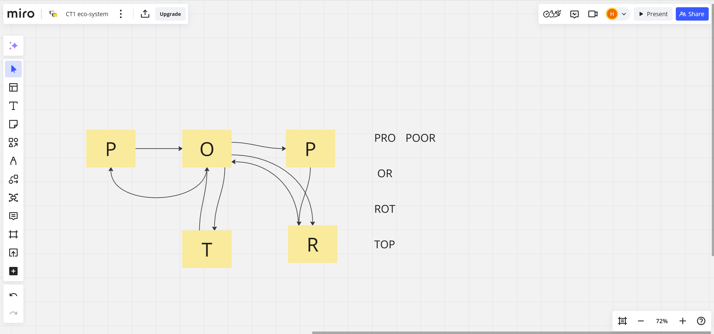 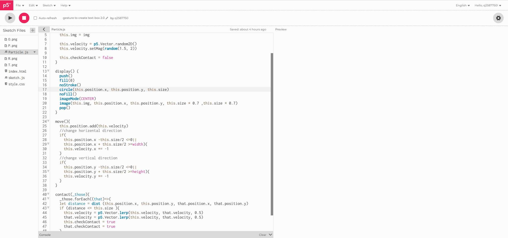 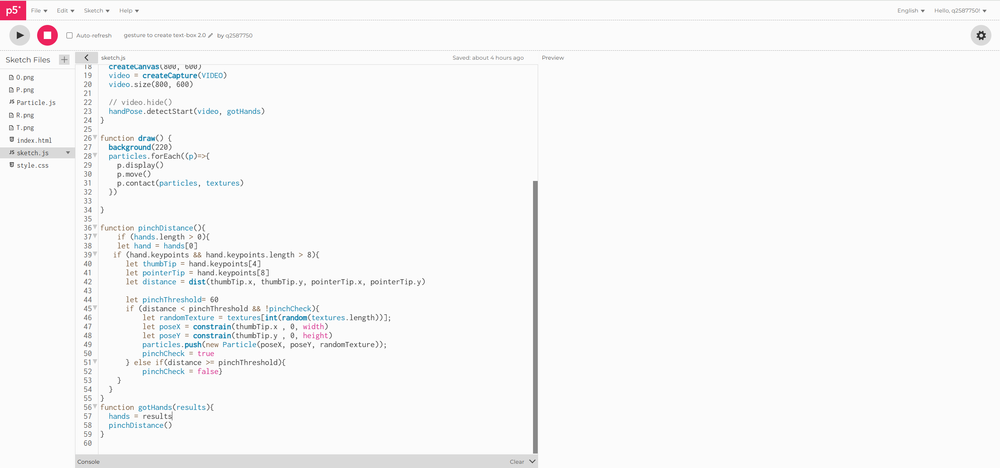2.So I changed the way of border detection and adjustment, but it led to a question that the velocity disappeared.
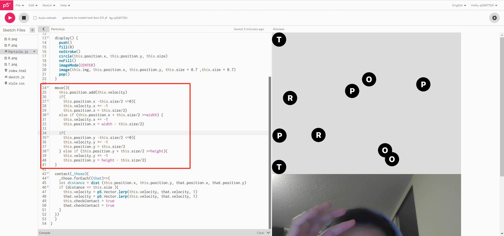3.Thus, I used constrain() to change the pos when circle touches border.
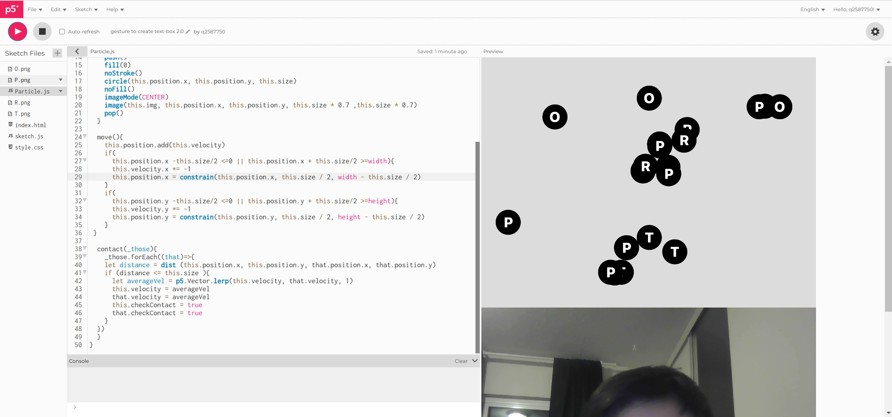4.The next step is to make each letter connect only with specific letter objects. So, I set up conditional checks in Particle.js and passed 'P', 'O', 'R', and 'T' to particleType in sketch.js. Then, particleType is assigned to type in Particle.js, which allows different conditions in contact to work based on the conditional checks.
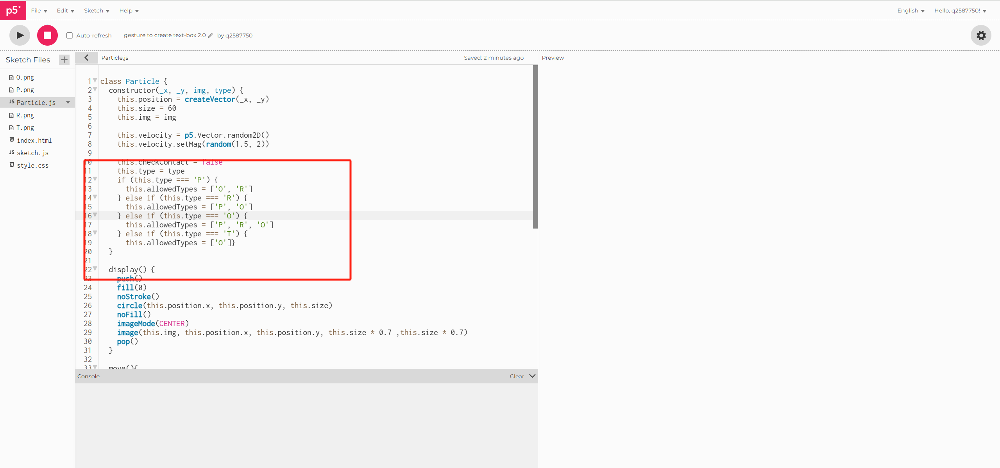 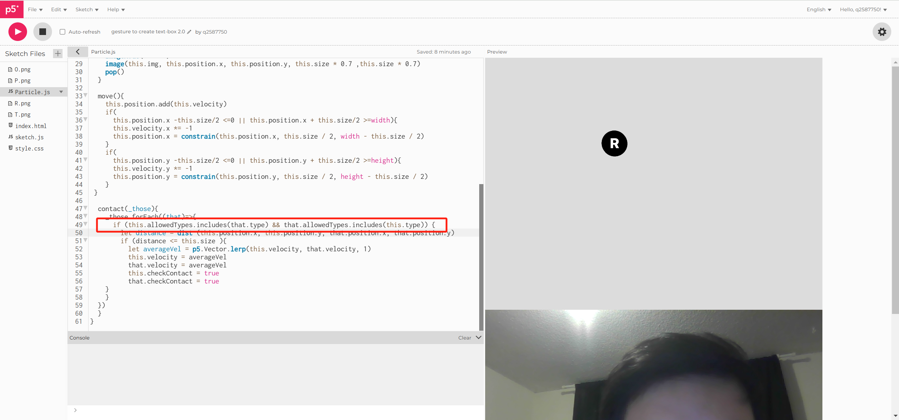 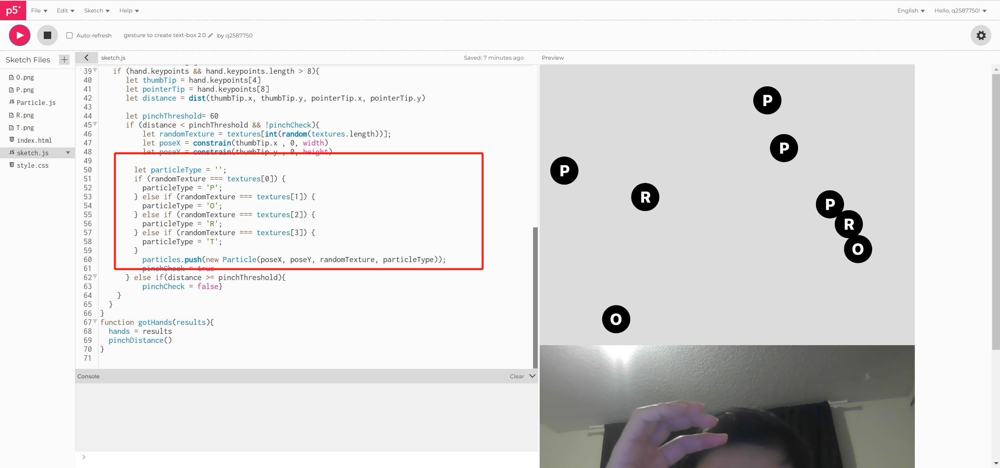5.The remaining part is how to avoid overlapping between circles.
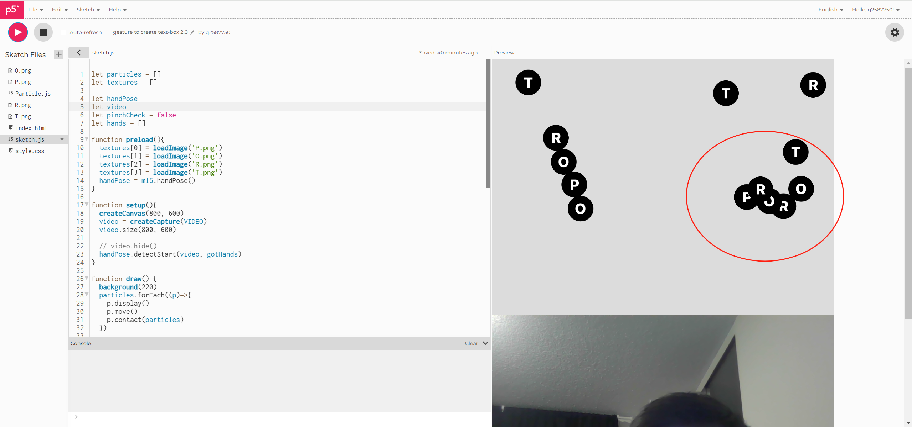6.I tried to add a repulsion, but it couldn't solve this question, since I have contact().
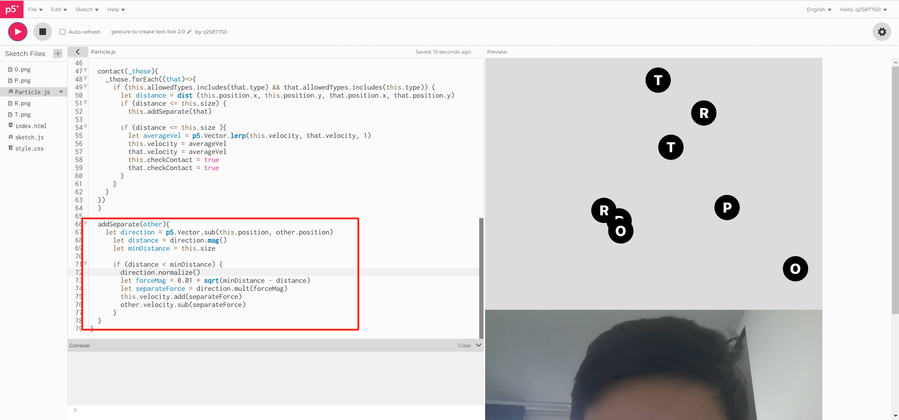7.So I changed my thinking. There are two cases of adhesion of the ball: one is because the ball appears in the overlapping position when it is just generated, so I only need to add a judgment that the ball will not contact() when it is just generated to avoid this situation; The other is that some balls will be restricted to the boundary position when they reach the boundary, I have not found a solution yet.
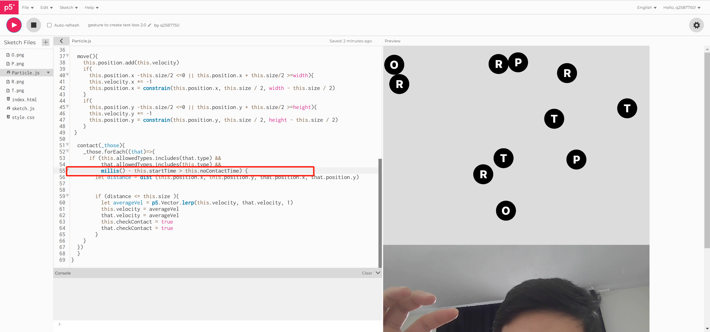